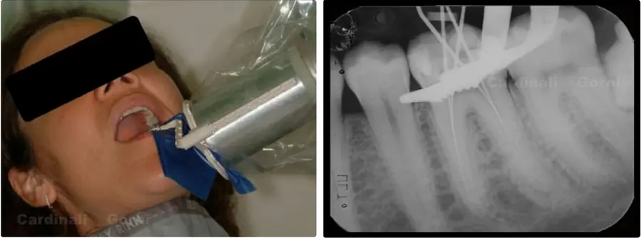
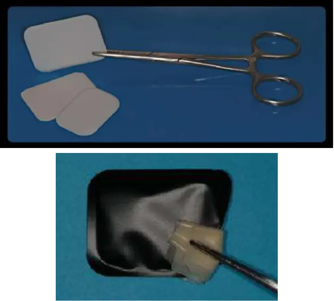

نسخه استخراجشده؛ ترجمه یا تأیید علمی انجام نشده است. وضعیت: captured
دانشجو برای رادیوگرافی طول کار، ورق را از فریم فلزی آزاد کرد، روی دندان تا زد و نگهدارندهی فیلم را در دهان گذاشت. بیمار که گاز گرفت، فایلها کمی جابهجا شدند و طولها در رادیوگرافی با اندازهی ثبتشده نمیخواند. چه باید میکرد؟

رادیوگرافی طول کار و کن اصلی بخشی از هر درمان ریشه است. رادیوگرافی با رابردم دشوار نیست؛ مشکل معمولاً ناآشنایی با ابزار و روش است. نوع فریم تعیین میکند رادیوگرافی را چگونه بگیری.
نشانهها (فایل یا کن گوتاپرکا) در کانالاند. ورق را از فریم آزاد میکنی، تا میزنی، نگهدارندهی فیلم درمان ریشه (مثل RINN) را با فیلم میگذاری و با تکنیک موازی رادیوگرافی میگیری.
کلمپ فلزی ممکن است در رادیوگرافی بخش تاج و ورودی کانال را بپوشاند؛ کلمپ پلاستیکی رادیولوسنت است و نمیپوشاند. ورق روشن هم کار را سادهتر میکند.
راه پیشنهادی این است که رابردم سر جایش بماند. سریعتر است و میدان در تمام درمان پایدار و بینشت میماند؛ فقط کمی تمرین میخواهد.

فکهای پنس به صفحهی فسفری فشار میآورند. تکهای از ورق اضافه را که هنگام گذاشتن فریم هشتضلعی بریدهای، دور صفحه بپیچ تا آسیب نبیند.
نکتهی طلایی: وقتی درمان ریشه و ترمیم پروگزیمال را در یک جلسه با ایزولاسیون چنددندانی انجام میدهی، برداشتن ورق از کوادرانت برای رادیوگرافی خطر از دست رفتن سیل را بسیار بالا میبرد. اینجا نگه داشتن فریم و ورق تنها راه است.